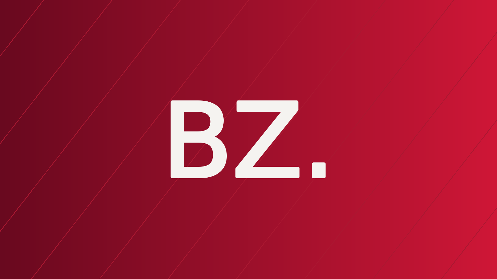

SmartPixel
CFO / Finance leadership · Montreal
Financial Controller from June 2022 to November 2023, then head of the finance function. Corporate finance, FP&A, accounting, treasury and financing, working with the leadership team.
CFO / Finance leadership
Connecting numbers to strategy.
Turning ideas into action.
01 / Background & expertise
Current role
Moved to Montreal
Languages
Two worlds, one approach
01Financial strategy
02FP&A & reporting
03Treasury
04Financing & growth
05Financial operations
06Systems & automation
07Financing & fundraising
08Grants & tax credits
02 / The story behind the experience
Finance to understand.
Strategy to move forward.
My career has taken me from major companies in France to leading finance at a technology business in Montreal. At L’Oréal and Henkel, I worked in credit management, pricing and commercial controlling.
I joined SmartPixel in 2022 as Financial Controller before taking the lead of the finance function. As CFO, I work with the leadership team on planning, treasury, financing and the decisions that shape growth.
I am also interested in digital tools, automation and AI: practical ways to better understand information, simplify processes and build new projects.
03 / Experience
CFO / Finance leadership · Montreal
Financial Controller from June 2022 to November 2023, then head of the finance function. Corporate finance, FP&A, accounting, treasury and financing, working with the leadership team.
Sales Controller & Credit Manager · France
Budget control for the Beauty Care division, including back-margin budgets, rebates, cooperation fees and payment terms.
Credit Manager DPGP / Pricing Manager Travel Retail
Pricing studies and tailored price lists for Travel Retail clients in the Middle East.
President · Non-profit organization
A non-profit initiative focused on creating and sharing multimedia, film and educational content.
Sales & Marketing Project Manager · Paris
Opportunity assessment for the DOC360 offering and analysis of the French electronic document management market.
04 / Projects

Project 001Building a website that extends my professional background, documents my projects and makes room for my ideas and what I learn along the way.
Discover the project Project 002
Project 002Three successful applications securing CAD 102,500 in grants to support Active Media’s export development and digital transformation.
Discover the project$500,000 in financing secured to launch Horizon’s first phase, recruit a development team and support research and development at SmartPixel.
Discover the project05 / Let’s connect
Finance, technology, projects: let’s connect by phone, email or on LinkedIn.
Connect on LinkedIn